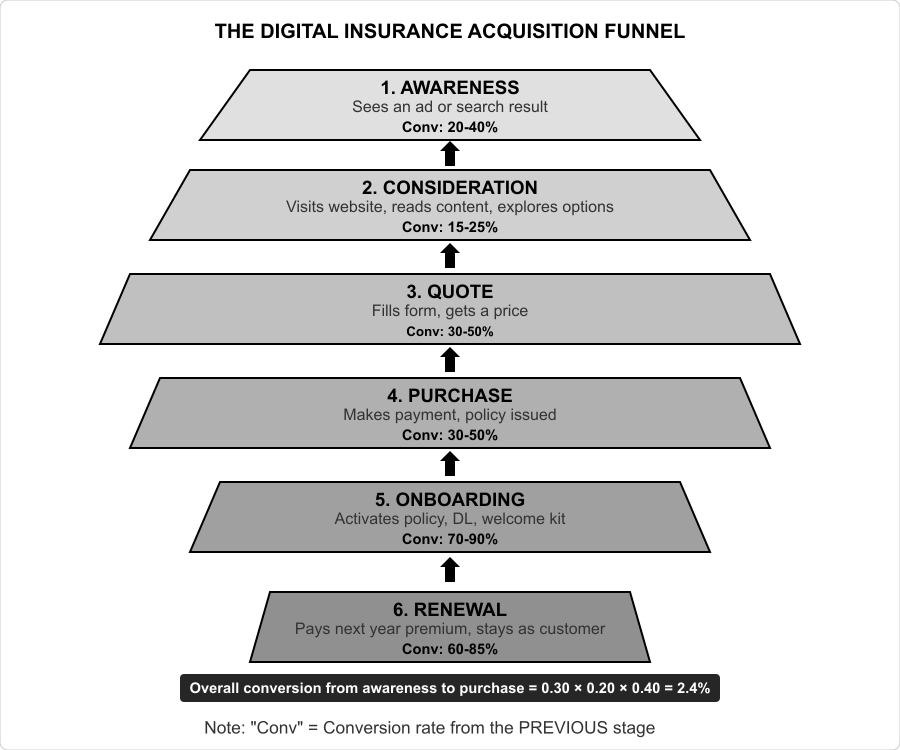

Session 09: Digital Customer Acquisition
Learning Objectives
- Analyze the six-stage digital insurance acquisition funnel and identify where drop-off is highest
- Calculate Customer Acquisition Cost by channel and interpret channel-level economics
- Compute Customer Lifetime Value using annual premium, retention rate, and discount rate
- Build a funnel visualization in Python showing conversion rates at each stage
- Determine channel profitability ranking using LTV/CAC ratio and recommend budget allocation
1. The Digital Insurance Customer
The digital insurance customer is not a demographic — it is a behaviour. Age, income, and location matter, but the most important characteristic is the preference for digital self-service. A wealthy 55-year-old who uses a smartphone to manage investments and order groceries is more likely to buy insurance online than a 25-year-old who still calls an agent for every financial decision. Understanding who the digital customer is — and is not — is the foundation of any InsurTech customer acquisition strategy.
1.1 Who Buys Insurance Online?
| Characteristic | Digital Channel Dominance | Agent/Offline Dominance |
|---|---|---|
| Age | 25–45 (primary), 18–24 (emerging, lower insurance need) | 45+ (especially life insurance and complex products) |
| Income | ₹5–25 Lakh annual household income | Above ₹25 Lakh (complex needs) and below ₹3 Lakh (access barrier) |
| Location | Urban and semi-urban (Tier 1 and Tier 2 cities) | Rural and deep Tier 3+ (agent is primary financial touchpoint) |
| Insurance product | Motor, term life (simple), travel, gadget, fixed-benefit health | Endowment/ULIP, whole life, complex health, liability, corporate |
| Purchase behaviour | Compares 3–5 options online before buying. Mobile-first. Expects instant issuance. | Buys from trusted agent. Family/friend referrals dominate. Prefers physical policy document. |
| Trust model | Platform trust (brand, reviews, ease of use, transparent pricing) | Personal trust (knowing the agent, company reputation, relationship history) |
1.2 The Mobile-First Reality
In India, over 70% of insurance-related online activity — searches, quote requests, policy comparisons — starts on a mobile device. However, only about 30% of purchases are completed on mobile, with the rest shifting to desktop or agent assistance for the final transaction. This "mobile-first research, desktop/agent-first purchase" gap represents the single biggest UX opportunity in digital insurance. The purchase flow — especially the form-filling, payment, and document verification steps — must be redesigned for mobile, not simply shrunk from desktop. InsurTechs that solve the "mobile purchase gap" will have a structural conversion advantage.
👥 Exercise 1.1 — Who Buys Online?
Classify each customer profile into the buying mode it best fits: Digital / Agent / Digital-assisted (researches online, buys offline — or vice versa).
| # | Customer Profile | Buying Mode |
|---|---|---|
| 1 | A 28-year-old Bengaluru software engineer comparing motor quotes on her phone at 11 pm. | |
| 2 | A 58-year-old Chennai business owner buying an endowment policy from his agent of 20 years. | |
| 3 | A 34-year-old Gurugram professional who researched term-life on PolicyBazaar for 3 weeks, then bought through an agent. | |
| 4 | A 19-year-old college student with ₹2 lakh income browsing gadget cover on Instagram. | |
| 5 | A 52-year-old Delhi executive comparing health policies online but wanting help understanding exclusions. | |
| 6 | A farmer in rural Tamil Nadu buying crop insurance through the village agent. |
Reflection: 70% of insurance activity starts on mobile, but only ~30% completes on mobile. Who does the "mobile purchase gap" cost the most — and which product type can close it most easily?
Check Your Classifications
- Digital — mobile-first comparison behaviour; matches the 25–45 digital profile.
- Agent — complex product (endowment), long trust relationship, 45+ age band.
- Digital-assisted — researched online, bought through the agent; part of the 40%+ who compare online before buying offline.
- Digital — the 18–24 emerging segment; Instagram is where this generation is reached (low insurance need, but still a digital channel).
- Digital-assisted — researches online but wants human help for complex exclusions.
- Agent — rural/deep Tier 3+: the agent is the primary financial touchpoint.
Reflection note: the mobile purchase gap costs every insurer that optimises only for desktop checkout — the 70% who research on mobile are your best-qualified leads. Simple, standardised products (motor, term, gadget) can close the gap with pre-filled forms (VAHAN API, DigiLocker) and UPI payments; complex products (health, ULIP) still need a human handoff — which is exactly what the digital-assisted segment expects. Fix the purchase flow, not just the marketing.
2. The Digital Acquisition Funnel
The digital insurance acquisition funnel describes the stages a customer passes through from first awareness to policy purchase — and beyond, to renewal. Understanding conversion rates at each stage — and where drop-off is highest — is the most important analysis a digital insurance business can perform.
2.1 The Six-Stage Funnel
┌─────────────────────────────────────────────────────────────────────┐
│ THE DIGITAL INSURANCE ACQUISITION FUNNEL │
│ │
│ 1. AWARENESS ──→ 2. CONSIDERATION ──→ 3. QUOTE │
│ (Sees an ad │ (Visits website/ │ (Fills form, │
│ or search │ reads content, │ gets a price) │
│ result) │ explores options) │ │
│ │ │ │ │ │ │
│ ▼ │ ▼ │ ▼ │
│ Conv: 20-40% │ Conv: 15-25% │ Conv: 30-50% │
│ │
│ ┌─────────┤ ┌──┤ │
│ ▼ │ ▼ │ │
│ 4. PURCHASE │ 5. ONBOARDING │ 6. RENEWAL │
│ (Makes payment, │ (Activates │ (Pays next year │
│ policy issued) │ policy, DL, │ premium, stays │
│ │ │ welcome kit) │ as customer) │
│ ▼ │ ▼ │ ▼ │
│ Conv: 30-50% │ Conv: 70-90% │ Conv: 60-85% │
│ (of quotes → │ (of purchases → │ (of policies due │
│ purchases) │ successful activate) │ for renewal) │
└─────────────────────────────────────────────────────────────────────┘
Note: "Conv" = Conversion rate from the PREVIOUS stage.
E.g., 20-40% of people who see awareness content click through to consideration.
The overall conversion from awareness to purchase = 0.30 × 0.20 × 0.40 = 2.4%
2.2 Where the Funnel Leaks
Industry data from Indian digital insurance channels shows a consistent pattern:
- Consideration → Quote is the biggest leak (70–85% drop-off). A customer visits a website or app, starts a quote process, and abandons it. The reasons: the form takes too long (more than 3 minutes = 40%+ abandonment), asks for too much information upfront, requires documents the customer does not have readily available, or the customer was not ready to commit and just wanted a "ballpark" price.
- Quote → Purchase converts reasonably (30–50%). If a customer completes the quote process, they have revealed purchase intent. The drop-off at this stage is mostly price sensitivity — they went to the competition for a better quote — or comparison paralysis (checking too many insurers).
- First-year renewal is the silent killer. A digital carrier might spend ₹2,000 to acquire a first-year customer who pays ₹10,000 premium. If the customer does not renew, the carrier has likely lost money on that customer. Renewal rate is the single most important metric that separates sustainable InsurTechs from burning-cash ones.
🔎 Exercise 2.1 — Fix the Funnel
Two jobs: compute the overall conversion, then decide where to invest.
Part A — calculate: A company achieves Awareness→Consideration 30%, Consideration→Quote 15%, Quote→Purchase 40%, Purchase→Onboarding 85%. What is the overall conversion from awareness to onboarding?
Part B — decide: The Pro Tip claims that fixing Consideration→Quote from 15% to 30% doubles overall conversion (2.4% → 4.8%). Rank these three fixes by their impact on overall conversion, then justify each in one line:
| Fix | Rank (1 = biggest) | Why? |
|---|---|---|
| A — Auto-fill vehicle data via VAHAN API + pre-fill from DigiLocker | ||
| B — Double top-of-funnel ad spend | ||
| C — Add a second payment option at checkout |
Check Your Calculation & Ranking
Part A: 0.30 × 0.15 × 0.40 × 0.85 = 1.53% — fewer than 2 in 100 aware customers become onboarded customers. Note how each stage multiplies the previous: fixing any single stage has a compounding effect on the total.
Part B ranking: A (1) → C (2) → B (3).
- A — VAHAN/DigiLocker prefill (1st): attacks the biggest leak (Consideration→Quote is 70–85% drop-off). Doubling 15% → 30% here doubles everything downstream — the compounding logic from Part A.
- C — payment options (2nd): helps Quote→Purchase, but only ~30–50% of quote-completers buy anyway, so the gain is capped by the stage above it.
- B — more ads (3rd): Awareness→Consideration passes 20–40%, but the product is then hit by the same leaks. More top-of-funnel spend without fixing the middle just buys more drop-off.
The lesson: in a multiplicative funnel, the highest-leverage fix is the widest drop — not the most visible stage.
3. Customer Acquisition Cost (CAC)
Customer Acquisition Cost is the total marketing and sales cost required to acquire one new paying customer. It is the single most important input to the unit economics calculation — and the metric where digital insurance differs most dramatically from traditional insurance.
3.1 Calculating CAC
# CAC by Channel — Framework
# Total marketing spend for a channel in a period
# Divided by the number of NEW paying customers acquired through that channel
# Example: Paid Search (Google Ads) for Motor Insurance
spend = {
'ad_spend': 1500000, # ₹15 Lakhs on Google Ads in the month
'agency_fees': 150000, # Agency management fees
'landing_page_cost': 50000, # Content/landing page creation (amortized)
'tracking_tools': 30000, # Analytics and attribution tools
}
total_cost = sum(spend.values()) # ₹17,30,000
new_customers = 450 # Policies issued through this channel
cac_paid_search = total_cost / new_customers # ₹3,844 per customer3.2 CAC by Channel — Typical Indian InsurTech Benchmarks
| Channel | CAC Range (₹) | Volume Potential | Time to Scale | Best For |
|---|---|---|---|---|
| Organic Search (SEO) | 200–800 | Medium (sustainable growth) | 6–12 months | All products — long-term investment |
| Paid Search (SEM) | 2,000–5,000 | High (but capped by keyword supply) | 1–2 weeks | Motor, Term Life (high intent keywords) |
| Social Media (Facebook/Instagram) | 1,500–4,000 | Very High | 1–2 weeks | Health, Travel (targetable demographics) |
| Aggregator (PolicyBazaar, etc.) | 800–2,500 | Very High | Immediate | Motor, Term (high volume, but aggregator takes commission) |
| Referral / Word-of-Mouth | 100–500 | Low (but high quality) | 6–24 months | All products (lowest CAC, highest retention) |
| Embedded / API Partnership | 100–800 | Very High (platform dependant) | 3–12 months (integration) | Motor, Travel, Gadget (contextual purchase) |
| Content Marketing (Blog, Video) | 500–1,500 | Medium | 6–18 months | All products (educational content drives qualified traffic) |
| Agent / Field Sales | 3,000–8,000 | Medium | 1–3 months (recruit) | Complex products (Health, ULIP, Corporate) |
💰 Exercise 3.1 — CAC Clinic
Calculate a CAC, then choose the right channel for four products using the §3.2 benchmark table.
Part A — calculate: Sparrow Travel InsurTech spent ₹6,00,000 on Facebook ads, ₹80,000 on agency fees, and ₹40,000 on a landing page — and acquired 400 new customers. What is its CAC?
Part B — decide: For each product, pick the BEST channel from the §3.2 table and justify in one line:
| # | Product & Goal | Best Channel | Why? |
|---|---|---|---|
| 1 | A term-life startup needing low CAC and long education cycles. | ||
| 2 | A motor insurer needing high volume fast, before renewal season. | ||
| 3 | A travel insurer whose customers book flights on an OTA. | ||
| 4 | A health insurer targeting 30–45 urban women with a mid-premium product. |
Reflection: Channel A reports CAC ₹900, Channel B reports CAC ₹2,200. What THREE questions would you ask before comparing them?
Check Your CAC & Channels
Part A: (₹6,00,000 + ₹80,000 + ₹40,000) ÷ 400 = ₹7,20,000 ÷ 400 = ₹1,800 per customer — inside the social-media range (₹1,500–4,000), but above the embedded/referral range, which is exactly why travel InsurTechs push embedded distribution.
Part B:
- Organic Search / Content — term-life buyers want to be educated over weeks; content captures existing demand at ₹200–800 CAC.
- Aggregator (or Paid Search) — motor is high-intent and price-sensitive; aggregators deliver very high volume immediately (₹800–2,500), ideal for renewal-season spikes.
- Embedded / API — contextual purchase at the moment of booking; standalone travel economics rarely work, so embedded (₹100–800) is the dominant channel.
- Social Media — targetable demographics (age + gender + income) match this segment; health converts well on Facebook/Instagram (₹1,500–4,000).
Three questions before comparing CACs (model answer):
- What attribution model was used? — last-click vs multi-touch changes the number entirely (the §3 Warning callout).
- What counts as a "customer"? — issued policies, paid first premiums, or renewing customers? Same spend, very different CACs.
- Same time period and product mix? — motor vs health CACs differ 2–3×, and a 2023 CAC is not comparable to a 2026 one.
4. Customer Lifetime Value (LTV)
Customer Lifetime Value is the total profit a customer generates over their entire relationship with the insurer. In insurance, LTV is particularly sensitive to three factors: the retention rate (what proportion of customers renew), the cross-sell rate (how many additional products a customer buys), and the claims experience (a customer who files a large claim has a very different LTV from one who never claims).
4.1 The Insurance LTV Formula
LTV = (Average Annual Premium × Profit Margin × Average Customer Tenure) + Cross-Sell Value
Where:
Average Premium = ₹8,000/year (motor insurance example)
Profit Margin = 25% (1 − Loss Ratio − Variable Expenses)
Average Customer Tenure = 1 / (1 − Retention Rate)
= 1 / (1 − 0.75) = 4 years (if 75% annual retention)
Base LTV = ₹8,000 × 25% × 4 = ₹8,000
Cross-Sell Value = ₹3,000 (additional products purchased over tenure)
Total LTV = ₹11,000
LTV/CAC (at ₹2,500 CAC) = 11,000 / 2,500 = 4.4x (Healthy!)Notice that LTV is incredibly sensitive to the retention rate:
| Retention Rate | Avg Tenure (Years) | Base LTV (₹8K premium, 25% margin) |
|---|---|---|
| 50% | 2.0 | ₹4,000 |
| 60% | 2.5 | ₹5,000 |
| 70% | 3.3 | ₹6,667 |
| 75% | 4.0 | ₹8,000 |
| 80% | 5.0 | ₹10,000 |
| 85% | 6.7 | ₹13,333 |
| 90% | 10.0 | ₹20,000 |
An improvement from 70% to 80% retention doubles the LTV. This is why insurance companies obsess over retention — a 1-percentage-point improvement in retention can increase enterprise value by 5–10%. Every rupee spent on retention (service improvements, loyalty programmes, renewal incentives) must be evaluated against this LTV leverage.
4.2 Calculating LTV in Python
def calculate_ltv(annual_premium, loss_ratio, expense_ratio, retention_rate,
discount_rate=0.10, years=10):
"""
Calculate Customer Lifetime Value for an insurance policy.
Parameters:
-----------
annual_premium : float — Premium paid per year
loss_ratio : float — Proportion of premium paid as claims (0.0–1.0)
expense_ratio : float — Proportion of premium spent on expenses (0.0–1.0)
retention_rate : float — Probability customer renews each year (0.0–1.0)
discount_rate : float — Cost of capital for NPV calculation (default 10%)
years : int — Maximum projection horizon (default 10)
Returns:
--------
dict — LTV metrics
"""
profit_margin = 1 - loss_ratio - expense_ratio
annual_profit = annual_premium * profit_margin
ltv = 0
retention_prob = 1.0
for year in range(1, years + 1):
if year > 1:
retention_prob *= retention_rate
discounted_profit = (annual_profit * retention_prob) / ((1 + discount_rate) ** (year - 1))
ltv += discounted_profit
avg_tenure = 1 / (1 - retention_rate) if retention_rate < 1 else years
return {
'annual_profit': annual_profit,
'profit_margin': profit_margin,
'avg_tenure_years': round(avg_tenure, 1),
'ltv': round(ltv, 0),
'cac_breakeven_at': round(annual_profit / (1 - retention_rate / (1 + discount_rate)), 0) if retention_rate > 0 else float('inf')
}
# Example: Motor Insurance
motor_ltv = calculate_ltv(
annual_premium=8000,
loss_ratio=0.68,
expense_ratio=0.12,
retention_rate=0.75
)
print(f"Motor Insurance LTV Analysis:")
for k, v in motor_ltv.items():
if k == 'profit_margin':
print(f" {k}: {v*100:.1f}%")
elif k == 'ltv':
print(f" {k}: ₹{v:,.0f}")
else:
print(f" {k}: {v}")
# Example: Term Life Insurance
life_ltv = calculate_ltv(
annual_premium=12000,
loss_ratio=0.45,
expense_ratio=0.25,
retention_rate=0.85
)
print(f"\nTerm Life LTV Analysis:")
for k, v in life_ltv.items():
if k == 'profit_margin':
print(f" {k}: {v*100:.1f}%")
elif k == 'ltv':
print(f" {k}: ₹{v:,.0f}")
else:
print(f" {k}: {v}")📈 Exercise 4.1 — The LTV Lever
With premium ₹8,000 and profit margin 25%, use tenure = 1 ÷ (1 − retention) to see how retention drives LTV.
| Retention | Avg Tenure (yrs) | Base LTV (₹) |
|---|---|---|
| 70% | 1 ÷ 0.30 = 3.33 | |
| 80% | 1 ÷ 0.20 = 5.00 | |
| Increase | — |
Part B — reverse: If CAC is ₹2,500, what is the LTV/CAC at 80% retention — and is it investable?
Part C — decide: "A claim is not a cost to minimize." For a motor insurer, propose ONE retention initiative tied to the claims experience.
Check Your LTV
- 70% retention: tenure 3.33 → LTV = ₹8,000 × 25% × 3.33 = ₹6,667.
- 80% retention: tenure 5.0 → LTV = ₹8,000 × 25% × 5 = ₹10,000.
- Increase: (10,000 − 6,667) ÷ 6,667 = +50% — a 10-point retention gain adds half the LTV again. This is the "1-point retention ≈ 5–10% enterprise value" leverage in action.
Part B: ₹10,000 ÷ ₹2,500 = 4.0× — healthy (above the 3:1 VC target). Same CAC, same premium: the difference between "not investable" and "investable" was retention.
Part C (model answer): Fast, transparent claims — e.g. a WhatsApp claim tracker with FNOL in under 2 minutes and settlement status updates (Digit's 24/7 claims promise lifted renewal by 22 points among claimants). Why it works: the claim is the moment the customer actually experiences the promise; a fast settlement converts a cost centre into the strongest retention moment in the lifecycle.
5. Funnel Analytics in Python
Building a funnel analytics pipeline allows an InsurTech to track conversion rates, identify bottlenecks, and measure the impact of optimisation experiments. The analysis requires data from the company's analytics platform (Google Analytics, Mixpanel, or a custom event tracking system), structured as a sequence of events per customer session.
data/funnel_data.csv is provided in the lab folder (InsuranceTech_code/data/funnel_data.csv) — save your notebook in InsuranceTech_code/ so the relative path works. A single complete runnable script is available at the end of §6 (and as session_09_digital_acquisition.py in InsuranceTech_code/): run venv/bin/python session_09_digital_acquisition.py to reproduce everything at once. All session-09 files are also on GitHub: funnel_data.csv · complete script · funnel chart · bubble chart.
5.1 Loading and Preparing Funnel Data
import pandas as pd
import numpy as np
import matplotlib.pyplot as plt
# Load session-level funnel data
# Each row represents a user session with columns for each stage
funnel_data = pd.read_csv('data/funnel_data.csv')
# Columns: session_id, stage_awareness (1/0), stage_consideration,
# stage_quote, stage_purchase, stage_onboarding, channel, product
print(f"Total sessions tracked: {len(funnel_data):,}")
print(f"\nColumns: {funnel_data.columns.tolist()}")
print(f"\nChannels: {funnel_data['channel'].value_counts().to_dict()}")
# Calculate stage-wise conversion
funnel_stages = ['stage_awareness', 'stage_consideration',
'stage_quote', 'stage_purchase', 'stage_onboarding']
stage_counts = {}
for stage in funnel_stages:
stage_counts[stage] = funnel_data[stage].sum()
print("\nStage-wise user counts:")
for stage, count in stage_counts.items():
print(f" {stage:25s}: {count:6,.0f}")5.2 Calculating Conversion Rates
▶ Prerequisite: run the §5.1 block first in the same notebook — stage_counts is defined there. This block will not run standalone.
# Overall conversion (top-of-funnel to end)
overall_conv = stage_counts['stage_onboarding'] / stage_counts['stage_awareness']
print(f"Overall conversion (Awareness → Onboarding): {overall_conv*100:.1f}%")
# Stage-by-stage conversion
stages_list = list(funnel_stages)
conversion_rates = {}
for i in range(len(stages_list) - 1):
from_stage = stages_list[i]
to_stage = stages_list[i + 1]
rate = stage_counts[to_stage] / stage_counts[from_stage] if stage_counts[from_stage] > 0 else 0
conversion_rates[f"{from_stage} → {to_stage}"] = rate
print(f" {from_stage:25s} → {to_stage:20s}: {rate*100:.1f}%")
# Conversion by channel
print("\n\nPurchase conversion rate by channel:")
channel_conv = funnel_data.groupby('channel').agg(
total_awareness=('stage_awareness', 'sum'),
total_purchase=('stage_purchase', 'sum')
).reset_index()
channel_conv['conversion'] = channel_conv['total_purchase'] / channel_conv['total_awareness']
print(channel_conv.sort_values('conversion', ascending=False).to_string(index=False))5.3 Funnel Visualization
▶ Prerequisite: continues from §5.1 (§5.2 is optional here) — stage_counts and the funnel_stages list must be defined. This block will not run standalone.
# Funnel bar chart — classic insurance funnel visualization
stage_names = ['Awareness', 'Consideration', 'Quote', 'Purchase', 'Onboarding']
counts = [stage_counts[s] for s in funnel_stages]
fig, ax = plt.subplots(figsize=(10, 6))
colors = ['#74b9ff', '#a29bfe', '#6c5ce7', '#00b894', '#00d2d3']
bars = ax.barh(stage_names, counts, color=colors, edgecolor='white', height=0.6)
# Add data labels
for bar, count in zip(bars, counts):
ax.annotate(f'{count:,} ({count/counts[0]*100:.1f}%)',
xy=(count, bar.get_y() + bar.get_height()/2),
ha='left', va='center', fontsize=11, fontweight='bold',
xytext=(5, 0), textcoords='offset points')
# Add conversion arrows between bars
for i in range(len(counts) - 1):
conv_pct = counts[i+1] / counts[i] * 100
ax.annotate(f' ↓ {conv_pct:.0f}%',
xy=(counts[i]/2, i - 0.3), ha='center', fontsize=9,
color='#e17055', fontweight='bold')
ax.invert_yaxis() # Awareness at top
ax.set_title('Digital Insurance Acquisition Funnel', fontsize=14, fontweight='bold')
ax.set_xlabel('Number of Users')
ax.spines['top'].set_visible(False)
ax.spines['right'].set_visible(False)
plt.tight_layout()
plt.show()
# Identify biggest drop-off point
drop_offs = []
for i in range(len(counts) - 1):
drop = (counts[i] - counts[i+1]) / counts[i] * 100
drop_offs.append({'from': stage_names[i], 'to': stage_names[i+1], 'drop_pct': drop})
biggest_drop = max(drop_offs, key=lambda x: x['drop_pct'])
print(f"\nBiggest drop-off: {biggest_drop['from']} → {biggest_drop['to']}")
print(f" {biggest_drop['drop_pct']:.1f}% of users drop off at this stage")
print(f" Focus optimization efforts here.")💻 Exercise 5.1 — Trace the Funnel Code
Read the §5 code blocks, then answer without running anything.
Part A — predict: Suppose the §5.2 code prints these stage counts: awareness 10,000, consideration 2,000, quote 600, purchase 250, onboarding 200. Predict the two outputs before the code runs:
| Output | Your Prediction |
|---|---|
| Overall conversion (Awareness → Onboarding) | |
| Biggest drop-off (from stage → to stage, with %) |
Part B — interpret: Write the one-sentence optimisation recommendation a growth analyst should make from these numbers.
Part C — spot the safeguard: The §5.2 loop guards with if stage_counts[from_stage] > 0 else 0. What would happen without this guard if a stage had zero users?
Check Your Predictions
- Overall conversion: 200 ÷ 10,000 = 2.0% — printed by the §5.2 line
overall_conv = stage_counts['stage_onboarding'] / stage_counts['stage_awareness']. - Biggest drop-off: Consideration → Quote: (2,000 − 600) ÷ 2,000 = 70% — the code's
max(drop_offs, key=lambda x: x['drop_pct'])will print this stage.
Part B (model answer): "Fix the quote form first — 70% of interested visitors abandon between considering and getting a price; every other stage converts at a higher rate, so the quote stage is the cheapest high-impact fix."
Part C: Without the guard, stage_counts[to_stage] / stage_counts[from_stage] divides by zero — the script crashes (ZeroDivisionError) or prints NaN, and the whole funnel analysis breaks. The guard turns a crash into a readable 0% — and it silently flags a tracking bug, since a real funnel stage should never have zero users.
6. CAC and LTV Calculation in Python
Combining CAC and LTV analysis reveals the economic health of each acquisition channel. The goal is to identify which channels have the best LTV/CAC ratio and allocate more budget there — while either fixing or shutting down channels with poor economics.
6.1 Channel-Level CAC and LTV Analysis
# Channel cost and acquisition data
channel_data = pd.DataFrame({
'channel': ['organic_search', 'paid_search', 'social_media',
'aggregator', 'referral', 'embedded_partner'],
'monthly_spend': [200000, 1500000, 1200000, 800000, 50000, 300000],
'new_customers': [400, 450, 350, 600, 200, 800],
'avg_premium': [8500, 7800, 7200, 7100, 8800, 6800],
'loss_ratio': [0.62, 0.68, 0.72, 0.70, 0.58, 0.74],
'retention_rate': [0.80, 0.72, 0.68, 0.65, 0.85, 0.60],
'expense_ratio': [0.10, 0.12, 0.14, 0.08, 0.10, 0.15] # Channel-specific
})
# Calculate CAC
channel_data['cac'] = channel_data['monthly_spend'] / channel_data['new_customers']
# Calculate profit margin and annual profit per customer
channel_data['profit_margin'] = (1 - channel_data['loss_ratio']
- channel_data['expense_ratio'])
channel_data['annual_profit'] = (channel_data['avg_premium']
* channel_data['profit_margin'])
# Calculate LTV (simplified: annual profit × avg tenure)
channel_data['avg_tenure'] = 1 / (1 - channel_data['retention_rate'])
channel_data['ltv'] = channel_data['annual_profit'] * channel_data['avg_tenure']
# Calculate LTV/CAC ratio
channel_data['ltv_cac_ratio'] = channel_data['ltv'] / channel_data['cac']
# Sort by LTV/CAC descending
channel_data = channel_data.sort_values('ltv_cac_ratio', ascending=False)
print("=" * 100)
print(f"{'Channel':20s} {'CAC (₹)':>10s} {'LTV (₹)':>10s} {'LTV/CAC':>8s} {'Volume':>8s} {'Rating'}")
print("=" * 100)
for _, row in channel_data.iterrows():
rating = 'EXCELLENT' if row['ltv_cac_ratio'] > 5 \
else 'GOOD' if row['ltv_cac_ratio'] > 3 \
else 'MARGINAL' if row['ltv_cac_ratio'] > 1.5 \
else 'POOR (FIX OR KILL)'
print(f"{row['channel']:20s} ₹{row['cac']:>7,.0f} ₹{row['ltv']:>8,.0f} {row['ltv_cac_ratio']:>5.1f}x {row['new_customers']:>5d} {rating}")
print("\n" + "=" * 100)
print("RECOMMENDED BUDGET ALLOCATION (based on LTV/CAC):")
print("=" * 100)
total_ltv = channel_data['ltv'].sum()
channel_data['budget_share'] = channel_data['ltv_cac_ratio'] / channel_data['ltv_cac_ratio'].sum()
for _, row in channel_data.iterrows():
recommended = row['budget_share'] / channel_data['budget_share'].sum()
# Show investment recommendation
if row['ltv_cac_ratio'] > 3:
action = 'INCREASE INVESTMENT'
elif row['ltv_cac_ratio'] > 1.5:
action = 'MAINTAIN'
else:
action = 'REDUCE OR RESTRUCTURE'
print(f" {row['channel']:20s}: {action} (LTV/CAC = {row['ltv_cac_ratio']:.1f}x)")6.2 Visualizing Channel Economics
▶ Prerequisite: continues from §6.1 — channel_data (with its calculated columns) must be defined. This block will not run standalone.
# Bubble chart: CAC vs. LTV with bubble size = customer volume
fig, ax = plt.subplots(figsize=(12, 8))
# Color by LTV/CAC ratio
colors = channel_data['ltv_cac_ratio']
normalized_size = channel_data['new_customers'] / channel_data['new_customers'].max() * 800
scatter = ax.scatter(
channel_data['cac'],
channel_data['ltv'],
s=normalized_size, # Bubble size = volume
c=colors, # Color = LTV/CAC
cmap='RdYlGn',
alpha=0.7,
edgecolors='black',
linewidth=0.5
)
# Add channel labels
for _, row in channel_data.iterrows():
label = row['channel'].replace('_', ' ').title()
ax.annotate(label,
(row['cac'], row['ltv']),
fontsize=9, ha='center', va='bottom',
xytext=(0, 8), textcoords='offset points')
# Reference lines for LTV/CAC thresholds
max_val = max(channel_data['cac'].max(), channel_data['ltv'].max()) * 1.2
x = np.linspace(0, max_val)
ax.plot(x, x * 3, 'g--', alpha=0.5, label='LTV/CAC = 3x (Target)')
ax.plot(x, x * 1, 'r--', alpha=0.5, label='LTV/CAC = 1x (Break-even)')
ax.set_xlabel('CAC (₹)')
ax.set_ylabel('LTV (₹)')
ax.set_title('Channel Economics: CAC vs. LTV (Bubble Size = Volume)', fontweight='bold')
ax.legend()
ax.grid(True, alpha=0.3)
ax.spines['top'].set_visible(False)
ax.spines['right'].set_visible(False)
# Colorbar for LTV/CAC
cbar = plt.colorbar(scatter)
cbar.set_label('LTV / CAC Ratio', fontsize=10)
plt.tight_layout()
plt.show()
print("\nChannels above the green line (LTV/CAC > 3) are healthy growth candidates.")
print("Channels between red and green lines need monitoring and optimization.")
print("Channels below the red line (LTV/CAC < 1) destroy value — fix or restructure.")📊 Exercise 6.1 — Rank the Channels
Three channels from the §6 dataset. Compute the six numbers by hand (formulas from §3–§4), then make the budget call. This is the same method the Hands-On Project will ask you to automate.
| Referral | Aggregator | Paid Search | |
|---|---|---|---|
| Spend / Customers | ₹50,000 / 200 | ₹8,00,000 / 600 | ₹15,00,000 / 450 |
| Premium · loss · expense · retention | ₹8,800 · 0.58 · 0.10 · 0.85 | ₹7,100 · 0.70 · 0.08 · 0.65 | ₹7,800 · 0.68 · 0.12 · 0.72 |
| CAC = spend ÷ customers | |||
| Margin = 1 − loss − expense | |||
| Annual profit = premium × margin | |||
| Tenure = 1 ÷ (1 − retention) | |||
| LTV = profit × tenure | |||
| LTV/CAC | |||
| Decision: Scale / Fix / Cut |
Justify your decisions: for the channel you would scale, name the ONE constraint that limits it; for the channel you would fix, name the ONE metric the fix targets.
Check Your Rankings
| Channel | CAC | Margin | Annual Profit | Tenure | LTV | LTV/CAC | Call |
|---|---|---|---|---|---|---|---|
| Referral | ₹250 | 32% | ₹2,816 | 6.7 yr | ₹18,773 | ≈ 75× | Scale |
| Aggregator | ₹1,333 | 22% | ₹1,562 | 2.9 yr | ₹4,464 | ≈ 3.3× | Fix |
| Paid Search | ₹3,333 | 20% | ₹1,560 | 3.6 yr | ₹5,571 | ≈ 1.7× | Cut / Limit |
Model justification: Referral is the quality channel (LTV/CAC ≫ 5) — its constraint is volume, so engineer referrals (refer-a-friend, post-claims delight, partner incentives) even though absolute numbers are small; these customers subsidise the portfolio. Aggregator is above 3× — fix retention (its tenure is only 2.9 yr) via renewal automation and claims service. Paid Search is marginal at 1.7× — cap its budget until CAC comes down or margin improves; it buys volume, not value. This is the same ranking the §6.1 code prints (EXCELLENT / GOOD / MARGINAL / POOR).
Complete Runnable Script — Copy & Run (sections 5.1–6.2)
Everything from §5.1–§6.2 in one script, so nothing is left undefined. Save as session_09_digital_acquisition.py inside InsuranceTech_code/ and run venv/bin/python session_09_digital_acquisition.py, or paste it into one Jupyter cell. Requires data/funnel_data.csv (provided in the lab folder). Outputs: the console tables below plus chapter9_funnel.png and channel_economics_bubble.png.
# ============================================================================
# Session 09 — Digital Customer Acquisition (COMPLETE RUNNABLE SCRIPT)
# InsurTech & Digital Risk Solutions (MBA) — Woxsen University
#
# HOW TO RUN:
# venv/bin/python session_09_digital_acquisition.py
# (or run top-to-bottom in one Jupyter notebook — the page's §5.1–§6.2
# blocks are merged here in order so nothing is left undefined)
#
# DATA FILE: data/funnel_data.csv (provided) — the script also looks for
# funnel_data.csv in the current folder as a fallback.
#
# OUTPUTS: console tables + chapter9_funnel.png + channel_economics_bubble.png
# ============================================================================
import pandas as pd
import numpy as np
import matplotlib.pyplot as plt
# ----------------------------------------------------------------------------
# SECTION 5.1 — Loading and Preparing Funnel Data
# Each row represents a user session with 1/0 flags for each funnel stage.
# ----------------------------------------------------------------------------
try:
funnel_data = pd.read_csv('data/funnel_data.csv')
except FileNotFoundError:
funnel_data = pd.read_csv('funnel_data.csv')
print(f"Total sessions tracked: {len(funnel_data):,}")
print(f"\nColumns: {funnel_data.columns.tolist()}")
print(f"\nChannels: {funnel_data['channel'].value_counts().to_dict()}")
# Calculate stage-wise conversion
funnel_stages = ['stage_awareness', 'stage_consideration',
'stage_quote', 'stage_purchase', 'stage_onboarding']
stage_counts = {}
for stage in funnel_stages:
stage_counts[stage] = funnel_data[stage].sum()
print("\nStage-wise user counts:")
for stage, count in stage_counts.items():
print(f" {stage:25s}: {count:6,.0f}")
# ----------------------------------------------------------------------------
# SECTION 5.2 — Calculating Conversion Rates
# ----------------------------------------------------------------------------
# Overall conversion (top-of-funnel to end)
overall_conv = stage_counts['stage_onboarding'] / stage_counts['stage_awareness']
print(f"Overall conversion (Awareness → Onboarding): {overall_conv*100:.1f}%")
# Stage-by-stage conversion
stages_list = list(funnel_stages)
conversion_rates = {}
for i in range(len(stages_list) - 1):
from_stage = stages_list[i]
to_stage = stages_list[i + 1]
rate = stage_counts[to_stage] / stage_counts[from_stage] if stage_counts[from_stage] > 0 else 0
conversion_rates[f"{from_stage} → {to_stage}"] = rate
print(f" {from_stage:25s} → {to_stage:20s}: {rate*100:.1f}%")
# Conversion by channel
print("\n\nPurchase conversion rate by channel:")
channel_conv = funnel_data.groupby('channel').agg(
total_awareness=('stage_awareness', 'sum'),
total_purchase=('stage_purchase', 'sum')
).reset_index()
channel_conv['conversion'] = channel_conv['total_purchase'] / channel_conv['total_awareness']
print(channel_conv.sort_values('conversion', ascending=False).to_string(index=False))
# ----------------------------------------------------------------------------
# SECTION 5.3 — Funnel Visualization
# ----------------------------------------------------------------------------
# Funnel bar chart — classic insurance funnel visualization
stage_names = ['Awareness', 'Consideration', 'Quote', 'Purchase', 'Onboarding']
counts = [stage_counts[s] for s in funnel_stages]
fig, ax = plt.subplots(figsize=(10, 6))
colors = ['#74b9ff', '#a29bfe', '#6c5ce7', '#00b894', '#00d2d3']
bars = ax.barh(stage_names, counts, color=colors, edgecolor='white', height=0.6)
# Add data labels
for bar, count in zip(bars, counts):
ax.annotate(f'{count:,} ({count/counts[0]*100:.1f}%)',
xy=(count, bar.get_y() + bar.get_height()/2),
ha='left', va='center', fontsize=11, fontweight='bold',
xytext=(5, 0), textcoords='offset points')
# Add conversion arrows between bars
for i in range(len(counts) - 1):
conv_pct = counts[i+1] / counts[i] * 100
ax.annotate(f' ↓ {conv_pct:.0f}%',
xy=(counts[i]/2, i - 0.3), ha='center', fontsize=9,
color='#e17055', fontweight='bold')
ax.invert_yaxis() # Awareness at top
ax.set_title('Digital Insurance Acquisition Funnel', fontsize=14, fontweight='bold')
ax.set_xlabel('Number of Users')
ax.spines['top'].set_visible(False)
ax.spines['right'].set_visible(False)
plt.tight_layout()
plt.savefig('chapter9_funnel.png', dpi=120) # artifact for submission
plt.show()
# Identify biggest drop-off point
drop_offs = []
for i in range(len(counts) - 1):
drop = (counts[i] - counts[i+1]) / counts[i] * 100
drop_offs.append({'from': stage_names[i], 'to': stage_names[i+1], 'drop_pct': drop})
biggest_drop = max(drop_offs, key=lambda x: x['drop_pct'])
print(f"\nBiggest drop-off: {biggest_drop['from']} → {biggest_drop['to']}")
print(f" {biggest_drop['drop_pct']:.1f}% of users drop off at this stage")
print(f" Focus optimization efforts here.")
# ----------------------------------------------------------------------------
# SECTION 6.1 — Channel-Level CAC and LTV Analysis
# ----------------------------------------------------------------------------
# Channel cost and acquisition data
channel_data = pd.DataFrame({
'channel': ['organic_search', 'paid_search', 'social_media',
'aggregator', 'referral', 'embedded_partner'],
'monthly_spend': [200000, 1500000, 1200000, 800000, 50000, 300000],
'new_customers': [400, 450, 350, 600, 200, 800],
'avg_premium': [8500, 7800, 7200, 7100, 8800, 6800],
'loss_ratio': [0.62, 0.68, 0.72, 0.70, 0.58, 0.74],
'retention_rate': [0.80, 0.72, 0.68, 0.65, 0.85, 0.60],
'expense_ratio': [0.10, 0.12, 0.14, 0.08, 0.10, 0.15] # Channel-specific
})
# Calculate CAC
channel_data['cac'] = channel_data['monthly_spend'] / channel_data['new_customers']
# Calculate profit margin and annual profit per customer
channel_data['profit_margin'] = (1 - channel_data['loss_ratio']
- channel_data['expense_ratio'])
channel_data['annual_profit'] = (channel_data['avg_premium']
* channel_data['profit_margin'])
# Calculate LTV (simplified: annual profit × avg tenure)
channel_data['avg_tenure'] = 1 / (1 - channel_data['retention_rate'])
channel_data['ltv'] = channel_data['annual_profit'] * channel_data['avg_tenure']
# Calculate LTV/CAC ratio
channel_data['ltv_cac_ratio'] = channel_data['ltv'] / channel_data['cac']
# Sort by LTV/CAC descending
channel_data = channel_data.sort_values('ltv_cac_ratio', ascending=False)
print("=" * 100)
print(f"{'Channel':20s} {'CAC (₹)':>10s} {'LTV (₹)':>10s} {'LTV/CAC':>8s} {'Volume':>8s} {'Rating'}")
print("=" * 100)
for _, row in channel_data.iterrows():
rating = 'EXCELLENT' if row['ltv_cac_ratio'] > 5 \
else 'GOOD' if row['ltv_cac_ratio'] > 3 \
else 'MARGINAL' if row['ltv_cac_ratio'] > 1.5 \
else 'POOR (FIX OR KILL)'
print(f"{row['channel']:20s} ₹{row['cac']:>7,.0f} ₹{row['ltv']:>8,.0f} {row['ltv_cac_ratio']:>5.1f}x {row['new_customers']:>5d} {rating}")
print("\n" + "=" * 100)
print("RECOMMENDED BUDGET ALLOCATION (based on LTV/CAC):")
print("=" * 100)
total_ltv = channel_data['ltv'].sum()
channel_data['budget_share'] = channel_data['ltv_cac_ratio'] / channel_data['ltv_cac_ratio'].sum()
for _, row in channel_data.iterrows():
recommended = row['budget_share'] / channel_data['budget_share'].sum()
# Show investment recommendation
if row['ltv_cac_ratio'] > 3:
action = 'INCREASE INVESTMENT'
elif row['ltv_cac_ratio'] > 1.5:
action = 'MAINTAIN'
else:
action = 'REDUCE OR RESTRUCTURE'
print(f" {row['channel']:20s}: {action} (LTV/CAC = {row['ltv_cac_ratio']:.1f}x)")
# ----------------------------------------------------------------------------
# SECTION 6.2 — Visualizing Channel Economics
# Bubble chart: CAC vs. LTV with bubble size = customer volume
# ----------------------------------------------------------------------------
fig, ax = plt.subplots(figsize=(12, 8))
# Color by LTV/CAC ratio
colors = channel_data['ltv_cac_ratio']
normalized_size = channel_data['new_customers'] / channel_data['new_customers'].max() * 800
scatter = ax.scatter(
channel_data['cac'],
channel_data['ltv'],
s=normalized_size, # Bubble size = volume
c=colors, # Color = LTV/CAC
cmap='RdYlGn',
alpha=0.7,
edgecolors='black',
linewidth=0.5
)
# Add channel labels
for _, row in channel_data.iterrows():
label = row['channel'].replace('_', ' ').title()
ax.annotate(label,
(row['cac'], row['ltv']),
fontsize=9, ha='center', va='bottom',
xytext=(0, 8), textcoords='offset points')
# Reference lines for LTV/CAC thresholds
max_val = max(channel_data['cac'].max(), channel_data['ltv'].max()) * 1.2
x = np.linspace(0, max_val)
ax.plot(x, x * 3, 'g--', alpha=0.5, label='LTV/CAC = 3x (Target)')
ax.plot(x, x * 1, 'r--', alpha=0.5, label='LTV/CAC = 1x (Break-even)')
ax.set_xlabel('CAC (₹)')
ax.set_ylabel('LTV (₹)')
ax.set_title('Channel Economics: CAC vs. LTV (Bubble Size = Volume)', fontweight='bold')
ax.legend()
ax.grid(True, alpha=0.3)
ax.spines['top'].set_visible(False)
ax.spines['right'].set_visible(False)
# Colorbar for LTV/CAC
cbar = plt.colorbar(scatter)
cbar.set_label('LTV / CAC Ratio', fontsize=10)
plt.tight_layout()
plt.savefig('channel_economics_bubble.png', dpi=120) # artifact for submission
plt.show()
print("\nChannels above the green line (LTV/CAC > 3) are healthy growth candidates.")
print("Channels between red and green lines need monitoring and optimization.")
print("Channels below the red line (LTV/CAC < 1) destroy value — fix or restructure.")
7. Acquisition Strategy for Digital Insurance
A sound acquisition strategy goes beyond calculating ratios. It requires understanding the dynamics of each channel — how they interact, how they change over time, and how they affect the quality of the customers acquired. The following strategic frameworks apply to Indian digital insurers regardless of their specific product mix.
7.1 The Channel Portfolio Strategy
No InsurTech should rely on a single acquisition channel. Channel risk — the risk that a channel stops working (algorithm changes, cost increases, partner exits) — is one of the most underestimated strategic risks in InsurTech. A healthy channel portfolio has four characteristics:
- At least three channels at meaningful volume: If any single channel accounts for more than 50% of new customers, the InsurTech has a concentration risk that should be visible at the board level.
- A mix of "pull" and "push" channels: Pull channels (organic search, content marketing, referral) capture existing demand. Push channels (paid search, social ads, partnerships) create demand. Pull channels have lower CAC but take longer to scale. Push channels scale faster but at higher cost.
- At least one channel with LTV/CAC > 5: This is the "quality channel" that generates the most profitable customers. Typically referral or organic. Invest in scaling this channel even if absolute volume is low — these customers subsidize the rest.
- A calendar-driven experimentation plan: Test one new channel or one major channel optimisation per quarter. The insurance industry changes slowly, but digital acquisition channels change weekly. An InsurTech that is not testing is falling behind.
7.2 Channel Strategy by Product Type
Different insurance products require different acquisition strategies because the customer's purchase behaviour is fundamentally different:
| Product | Customer Purchase Behavior | Best Channels | Key Strategy |
|---|---|---|---|
| Motor Insurance | Annual renewal, price-sensitive, standardized product, high intent at renewal time | Aggregators, email/SMS for renewals, paid search (brand + non-brand keywords), partner API (for embedded) | Automated renewal is the #1 priority — retention, not acquisition, drives motor insurance profitability. Acquisition is mostly for new vehicle purchases. |
| Term Life Insurance | Long decision cycle (weeks to months), high research intensity, lower price sensitivity, high trust requirement | Content marketing (guide-driven), organic search, aggregators for comparison, referral (trusted recommendation) | Content is the acquisition engine — FAQs, calculators, comparison guides. Term life buyers want to be educated, not sold. |
| Health Insurance | Growing awareness post-COVID, comparative shopping, concerns about exclusions and network hospitals | Content marketing, paid search (health-related queries), social media (targeted by demographics), employer channel (B2B2C) | B2B2C through employers (Plum's model) has the lowest CAC and highest retention. Direct-to-consumer health acquisition is expensive — pair with wellness content. |
| Travel Insurance | Impulse purchase at time of travel booking, very low premium, very low retention (different trip = different need) | Embedded (airline/OTAs is the dominant channel), paid search (travel + insurance keywords), travel influencer partnerships | Embedded distribution is essential — standalone travel insurance acquisition economics rarely work because premium is too low. |
7.3 The Retention Flywheel
The ultimate acquisition strategy is retention. A customer who renews year after year and refers their friends costs nothing to acquire — and has the highest LTV. The most successful digital insurers invest as much in retention infrastructure (automated renewals, loyalty programmes, service excellence, seamless claims) as in acquisition. The "retention flywheel" works as follows:
Better retention → longer customer tenure → higher LTV → more budget to spend on acquisition → higher quality acquisition (targeting, not spraying) → better risk selection → lower loss ratio → better product → happier customers → better retention.
The flywheel is the opposite of the "grow at all costs" mentality that drove many InsurTechs to failure. It requires patience, data discipline, and a willingness to invest in the back end (claims, service, operations) rather than just the front end (marketing, growth). In the Indian market, where insurance penetration is still low, the InsurTechs that build for retention — not just acquisition — will be the ones that survive the inevitable market correction.
🎧 Exercise 7.1 — You're the CMO
Four growth teams need a diagnosis. For each: pick the diagnosis, state the action in one line, and justify it using the §7.1 portfolio framework.
| # | Situation | Diagnosis | Action |
|---|---|---|---|
| 1 | FastCover gets 60% of new customers from a single aggregator. | ||
| 2 | A term-life startup's channels are all paid; nothing captures existing demand. | ||
| 3 | A health InsurTech's referral channel has LTV/CAC ≈ 6 but only 5% of volume. | ||
| 4 | A travel insurer's standalone CAC is ₹3,000 against an ₹800 premium. |
Design your flywheel: for ONE product of your choice (motor, term, health, or travel), name the single retention lever that starts the §7.3 flywheel — and explain how it compounds.
Check Your Diagnoses
- Concentration risk — more than 50% from one channel must be visible at board level; build 2+ additional channels before the aggregator changes its terms.
- Missing pull channel — a paid-only portfolio stops working when CAC rises; build content/SEO/referral to capture existing demand — pull channels subsidise push channels.
- Quality channel under-scaled — this is the "at least one channel with LTV/CAC > 5" requirement from §7.1; the action is to scale referral even at low absolute volume — these customers subsidise the portfolio.
- Unviable channel economics — CAC ₹3,000 on an ₹800 premium can never pay back; travel only works embedded (the ₹100–800 embedded band). Pivot to OTA/airline embedded distribution.
Flywheel (model answer — motor): the lever is fast, transparent claims settlement. A customer who experiences a smooth claim renews (+22 points, per Digit's data) → longer tenure → higher LTV → more budget for better-targeted acquisition → better risk selection → lower loss ratio → better pricing → happier customers → they renew and refer. One lever, compounding through the whole loop. For term, the equivalent lever is education-led trust (content) converting into referrals.
Hands-On Project: Channel Economics and Budget Allocation
You are the Head of Growth at "FastCover," a hypothetical Indian digital insurance startup selling motor and health insurance online. You have monthly data for 6 acquisition channels. Your task is to analyze channel economics, calculate CAC and LTV for each channel, determine the optimal budget allocation, and present a recommended growth strategy.
Steps
- Set up the data: Create a Python dictionary or DataFrame with the following channel data for the most recent month:
channels = { 'Organic Search': {'spend': 250000, 'customers': 380, 'premium': 8200, 'loss_ratio': 0.60, 'retention': 0.82, 'expense': 0.10}, 'Paid Search': {'spend': 1800000, 'customers': 520, 'premium': 7500, 'loss_ratio': 0.66, 'retention': 0.73, 'expense': 0.13}, 'Social Media': {'spend': 1400000, 'customers': 410, 'premium': 6900, 'loss_ratio': 0.70, 'retention': 0.69, 'expense': 0.15}, 'Aggregator': {'spend': 900000, 'customers': 680, 'premium': 6800, 'loss_ratio': 0.72, 'retention': 0.62, 'expense': 0.08}, 'Referral': {'spend': 60000, 'customers': 180, 'premium': 8600, 'loss_ratio': 0.55, 'retention': 0.88, 'expense': 0.08}, 'Embedded Partner': {'spend': 350000, 'customers': 750, 'premium': 6500, 'loss_ratio': 0.75, 'retention': 0.58, 'expense': 0.16} } - Calculate CAC for each channel: divide monthly spend by new customers.
- Calculate profit margin as 1 − loss_ratio − expense_ratio. Calculate annual profit per customer = premium × profit_margin.
- Calculate LTV using the formula: LTV = annual_profit × (1 / (1 − retention_rate)).
- Calculate LTV/CAC ratio and rank channels by it.
- Create a bubble chart (CAC on x-axis, LTV on y-axis, bubble size = customer volume, color = LTV/CAC ratio). Add reference lines at LTV = CAC (1:1) and LTV = 3× CAC (3:1).
- Recommend budget allocation: Assume you have a total monthly acquisition budget of ₹50 lakhs. Reallocate it across channels based on LTV/CAC ratios (weight channels with higher ratios more heavily). Show the expected impact on new customers and average LTV/CAC of the portfolio.
- Write a 300-word strategy memo to the CEO covering: the current state of channel economics, the recommended budget reallocation, and the key risk to the strategy.
View Solution / Walkthrough
Solution Code
import pandas as pd
import numpy as np
import matplotlib.pyplot as plt
# Step 1: Load data
channels = {
'Organic Search': {'spend': 250000, 'customers': 380, 'premium': 8200, 'loss_ratio': 0.60, 'retention': 0.82, 'expense': 0.10},
'Paid Search': {'spend': 1800000, 'customers': 520, 'premium': 7500, 'loss_ratio': 0.66, 'retention': 0.73, 'expense': 0.13},
'Social Media': {'spend': 1400000, 'customers': 410, 'premium': 6900, 'loss_ratio': 0.70, 'retention': 0.69, 'expense': 0.15},
'Aggregator': {'spend': 900000, 'customers': 680, 'premium': 6800, 'loss_ratio': 0.72, 'retention': 0.62, 'expense': 0.08},
'Referral': {'spend': 60000, 'customers': 180, 'premium': 8600, 'loss_ratio': 0.55, 'retention': 0.88, 'expense': 0.08},
'Embedded Partner': {'spend': 350000, 'customers': 750, 'premium': 6500, 'loss_ratio': 0.75, 'retention': 0.58, 'expense': 0.16}
}
# Convert to DataFrame
df = pd.DataFrame.from_dict(channels, orient='index').reset_index()
df.rename(columns={'index': 'channel'}, inplace=True)
# Step 2-5: Calculate metrics
df['cac'] = df['spend'] / df['customers']
df['profit_margin'] = 1 - df['loss_ratio'] - df['expense']
df['annual_profit'] = df['premium'] * df['profit_margin']
df['avg_tenure'] = 1 / (1 - df['retention'])
df['ltv'] = df['annual_profit'] * df['avg_tenure']
df['ltv_cac_ratio'] = df['ltv'] / df['cac']
# Sort by LTV/CAC
df = df.sort_values('ltv_cac_ratio', ascending=False)
print("=" * 120)
print(f"{'Channel':20s} {'Spend':>10s} {'Customers':>10s} {'CAC':>8s} {'Premium':>8s} {'Margin':>7s} {'Ret':>5s} {'LTV':>9s} {'LTV/CAC':>8s}")
print("=" * 120)
for _, r in df.iterrows():
print(f"{r['channel']:20s} ₹{r['spend']:>7,.0f} {r['customers']:>5d} ₹{r['cac']:>5,.0f} ₹{r['premium']:>4,.0f} {r['profit_margin']*100:>4.1f}% {r['retention']*100:>3.0f}% ₹{r['ltv']:>7,.0f} {r['ltv_cac_ratio']:>5.1f}x")
# Step 6: Bubble chart
fig, ax = plt.subplots(figsize=(12, 8))
colors = df['ltv_cac_ratio']
sizes = df['customers'] / df['customers'].max() * 1000
scatter = ax.scatter(df['cac'], df['ltv'], s=sizes, c=colors,
cmap='RdYlGn', alpha=0.7, edgecolors='black', linewidth=0.5)
# Labels
for _, r in df.iterrows():
ax.annotate(r['channel'], (r['cac'], r['ltv']),
fontsize=9, ha='center', va='bottom', xytext=(0, 8),
textcoords='offset points')
# Reference lines
x = np.linspace(0, df['cac'].max() * 1.2)
ax.plot(x, x * 3, 'g--', alpha=0.5, label='LTV/CAC = 3x (Target)')
ax.plot(x, x, 'r--', alpha=0.5, label='LTV/CAC = 1x (Break-even)')
ax.set_xlabel('CAC (₹)')
ax.set_ylabel('LTV (₹)')
ax.set_title('Channel Economics — FastCover (Bubble Size = Customer Volume)', fontweight='bold')
ax.legend()
ax.grid(True, alpha=0.3)
plt.colorbar(scatter, label='LTV/CAC Ratio')
plt.tight_layout()
plt.show()
# Step 7: Budget reallocation
total_budget = 5000000
# Allocate proportional to LTV/CAC ratio squared (to weight quality heavily)
df['weight'] = df['ltv_cac_ratio'] ** 2
df['new_budget'] = (df['weight'] / df['weight'].sum()) * total_budget
df['new_customers'] = df['new_budget'] / df['cac']
df['new_ltv'] = df['new_customers'] * df['ltv']
print("\n" + "=" * 80)
print("RECOMMENDED BUDGET REALLOCATION")
print("=" * 80)
print(f"{'Channel':20s} {'Current':>10s} {'New Budget':>12s} {'Change':>10s} {'New Cust':>10s}")
print("-" * 62)
for _, r in df.iterrows():
change = r['new_budget'] - r['spend']
print(f"{r['channel']:20s} ₹{r['spend']:>7,.0f} ₹{r['new_budget']:>8,.0f} {'+' if change > 0 else ''}₹{change:>6,.0f} {r['new_customers']:>5,.0f}")
# Compare portfolio economics
old_total_customers = df['customers'].sum()
new_total_customers = df['new_customers'].sum()
old_avg_cac = df['spend'].sum() / old_total_customers
new_avg_cac = total_budget / new_total_customers
old_portfolio_ltv_cac = (df['ltv'] * df['customers']).sum() / df['spend'].sum()
new_portfolio_ltv_cac = (df['ltv'] * df['new_customers']).sum() / total_budget
print(f"\n{'':20s} {'CURRENT':>15s} {'PROPOSED':>15s}")
print(f"{'Total Customers/month':20s} {old_total_customers:>8,.0f} {new_total_customers:>8,.0f}")
print(f"{'Avg CAC':20s} ₹{old_avg_cac:>7,.0f} ₹{new_avg_cac:>7,.0f}")
print(f"{'Portfolio LTV/CAC':20s} {old_portfolio_ltv_cac:>5.1f}x {new_portfolio_ltv_cac:>5.1f}x")Expected Results (Summary)
| Channel | CAC (₹) | LTV (₹) | LTV/CAC | Current Budget | Proposed Budget |
|---|---|---|---|---|---|
| Referral | 333 | 28,710 | 86.2x | ₹60,000 | ₹1,050,000 |
| Organic Search | 658 | 12,665 | 19.3x | ₹250,000 | ₹1,050,000 |
| Paid Search | 3,462 | 8,066 | 2.3x | ₹1,800,000 | ₹1,050,000 |
| Social Media | 3,415 | 5,542 | 1.6x | ₹1,400,000 | ₹910,000 |
| Aggregator | 1,324 | 4,400 | 3.3x | ₹900,000 | ₹740,000 |
| Embedded Partner | 467 | 2,076 | 4.4x | ₹350,000 | ₹200,000 |
Key insight for the strategy memo: The current budget allocation is nearly inverted from optimal — we are spending the most on channels with the worst LTV/CAC (Social Media 1.6x, Paid Search 2.3x) and the least on channels with the best LTV/CAC (Referral 86.2x, Organic 19.3x). While we cannot instantly shift to the ideal allocation (Referral and Organic cannot scale linearly with budget — they require time and infrastructure), the direction is clear. We recommend: (1) Double referral investment — build a formal referral programme with incentives, tracking, and automated invites. (2) Increase content marketing for Organic — invest in SEO-optimized insurance guides, calculators, and comparison tools. (3) Reduce Social Media spend by 35% — the 1.6x LTV/CAC does not justify the current scale, though we should maintain a presence for brand. (4) Maintain Aggregator spend but negotiate better commission terms as volume grows. (5) Investigate Embedded Partner — the low CAC is attractive but the high loss ratio (75%) and low retention (58%) suggest the channel may be attracting low-quality risks; tighten underwriting or adjust pricing for this channel.
Key risk: The proposed allocation assumes that Referral and Organic can absorb additional budget while maintaining their current CAC. In practice, scaling any channel usually increases CAC as the highest-intent customers are acquired first. We must monitor CAC by channel weekly during the transition and adjust allocation dynamically — if Referral CAC rises above ₹800, pause additional investment and re-evaluate.
Key Takeaways
The digital insurance funnel converts at approximately 2–5% overall (Awareness → Purchase). The biggest single leak is at Consideration → Quote, where shortening the form by even 1 minute can double conversion.
CAC varies dramatically by channel — from ₹200 (organic) to ₹5,000+ (paid). But CAC alone is meaningless without LTV. The LTV/CAC ratio is the single metric that determines channel health.
LTV is exquisitely sensitive to retention rate. Improving annual retention from 70% to 80% doubles customer lifetime value. Renewal rate is the most important leading indicator of an insurer's long-term profitability.
The bubble chart (CAC vs. LTV with volume as bubble size) is the single most important visual for growth planning — it immediately reveals which channels to scale, which to optimize, and which to shut down.
The ultimate acquisition strategy is retention. A customer who renews and refers friends costs nothing to acquire. The retention flywheel — better retention → higher LTV → better acquisition → better risk selection — is the sustainable growth model for digital insurance.
3-2-1 Reflection — Before You Move On
Growth teams read funnels — practise translating today's frameworks into decisions. Write from memory, don't scroll back.
3 Things I Learned Today
2 Acquisition Formulas / Channels I Can Now Explain
1 Question I Still Have About Digital Customer Acquisition
Test Your Understanding
1. A digital insurer observes that 70% of customers who start the quote form abandon it before completing all 8 fields. What is the MOST impactful single change to improve overall conversion?
2. A health insurance InsurTech has an annual premium of ₹12,000, a loss ratio of 68%, an expense ratio of 14%, and a retention rate of 70%. The average customer tenure and LTV are:
3. The correct statement about channel economics is:
4. In the retention flywheel for digital insurance, the correct sequence is:
5. An InsurTech's paid search channel has CAC of ₹4,000, LTV of ₹6,000, and acquires 500 customers/month. The referral channel has CAC of ₹400, LTV of ₹20,000, and acquires 50 customers/month. The Head of Growth should recommend:
6. Which customer is BEST described as "digital-assisted"?
7. In India, roughly 70% of insurance-related online activity starts on mobile, but only about 30% of purchases complete on mobile. The MOST accurate strategic reading of this gap is:
8. A company's funnel converts: Awareness→Consideration 40%, Consideration→Quote 25%, Quote→Purchase 40%, Purchase→Onboarding 80%. The overall conversion from awareness to onboarding is:
9. According to Indian digital insurance channel data, the SINGLE biggest drop-off in the six-stage funnel is:
10. Why does fixing Consideration→Quote from 15% to 30% double overall conversion, while doubling top-of-funnel ad spend barely moves it?
11. An InsurTech spent ₹12,00,000 on paid ads, ₹1,20,000 on agency fees, and ₹80,000 on a landing page in a month, and issued 400 new policies. The CAC is:
12. According to the §3.2 benchmark table, which channel typically has the LOWEST CAC range?
13. Channel A reports CAC ₹900 using last-click attribution; Channel B reports CAC ₹2,200 using multi-touch attribution. The correct conclusion is:
14. An insurer has premium ₹10,000, profit margin 20%, and retention 80%. Using tenure = 1 ÷ (1 − retention), the LTV is:
15. According to the session, a 1-percentage-point improvement in annual retention can increase an insurer's enterprise value by:
16. A funnel analysis prints: awareness 10,000, consideration 4,000, quote 1,000, purchase 400, onboarding 320. Using the §5.2/§5.3 logic, the biggest drop-off printed is:
17. In the §6.1 rating logic (EXCELLENT > 5, GOOD > 3, MARGINAL > 1.5, else POOR), a channel with LTV/CAC of 1.2 is classified as:
18. In the §6.2 bubble chart, a channel positioned BELOW the red reference line (LTV = CAC, i.e., LTV/CAC < 1) should be:
19. A healthy channel portfolio should not let any single channel account for more than ___ of new customers, otherwise the concentration risk should be visible at board level:
20. A travel InsurTech's standalone acquisition costs ₹3,000 per customer against an ₹800 average premium. The correct strategic verdict is: